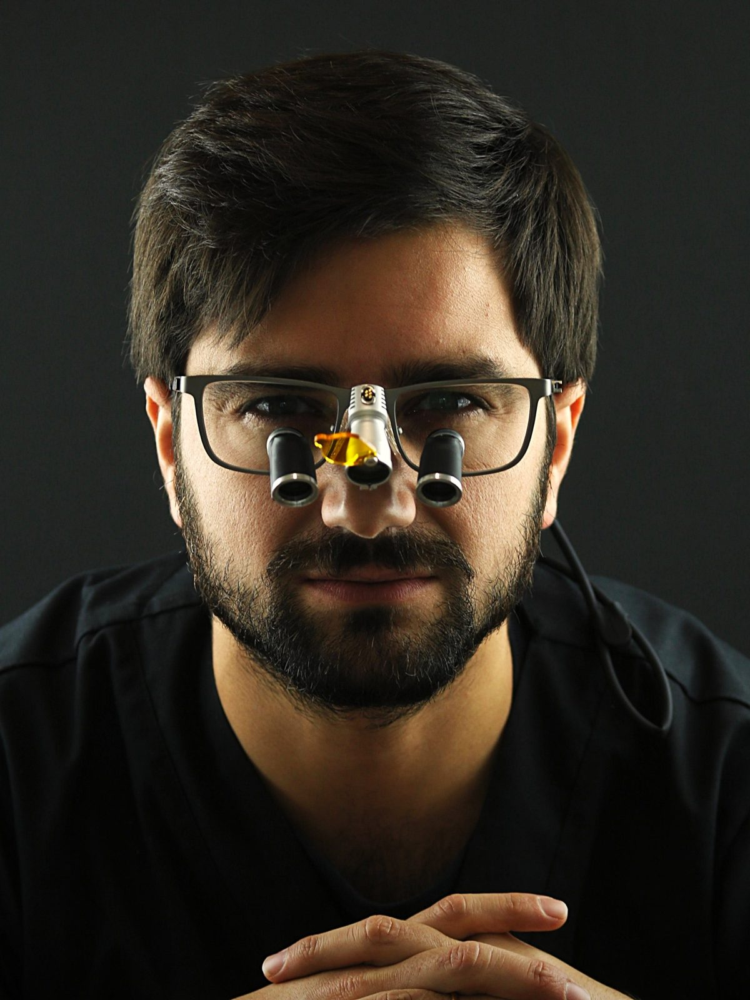
Dentist, DDS · Paris · Mitry-Mory
Complex rehabilitation on teeth and implants, implant and guided surgery, soft and hard tissue regeneration.
Most of the time a patient does not need just a simple treatment, they need a global rehabilitation. Often there is a loss of vertical dimension, or an imbalance of the occlusal plane, which brings aesthetic problems as well as functional ones. I think it is our job to tell them what they actually need, and not only what we believe they will accept.
I build my own surgical guides and plan in exocad. The prosthetic rehabilitation comes first, the surgical plan second.
Four days of clinical immersion. You watch the clinical day as it happens, and the programme is built around what you came to learn.
Colleagues come and watch clinical cases done by me live, with nothing to hide.
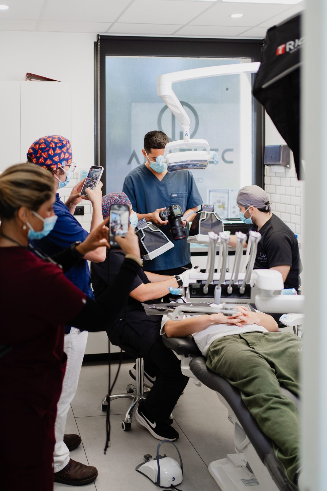
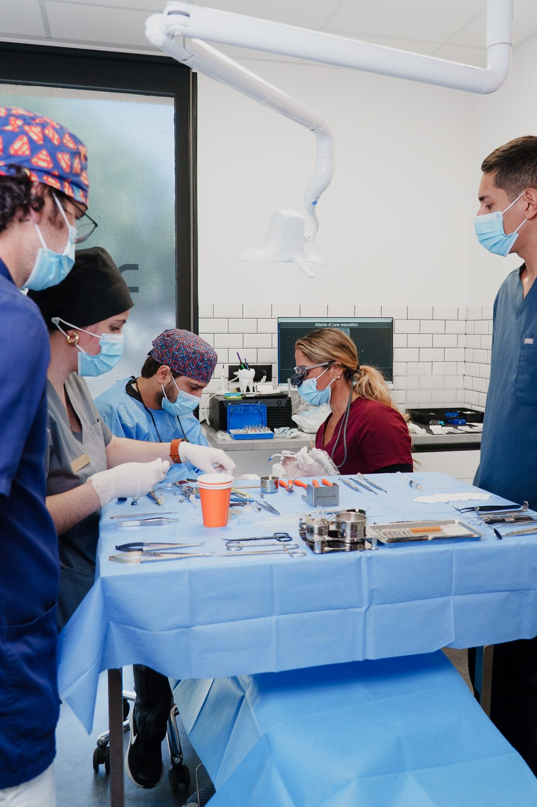
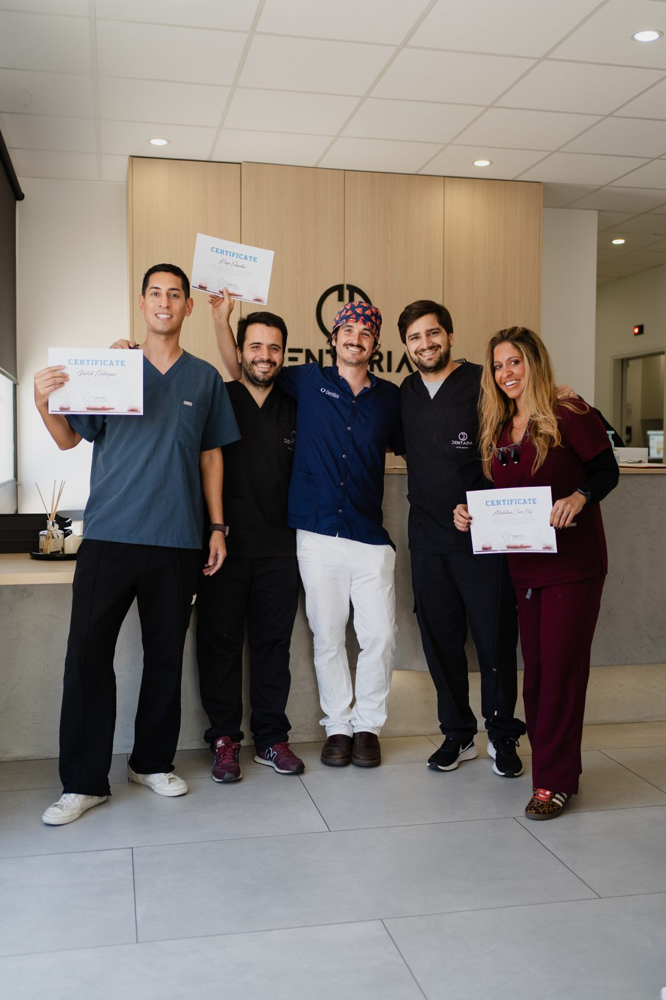
Five photographs from my own cases, shown with written consent. They are what the work looks like, not a claim about what it achieves.
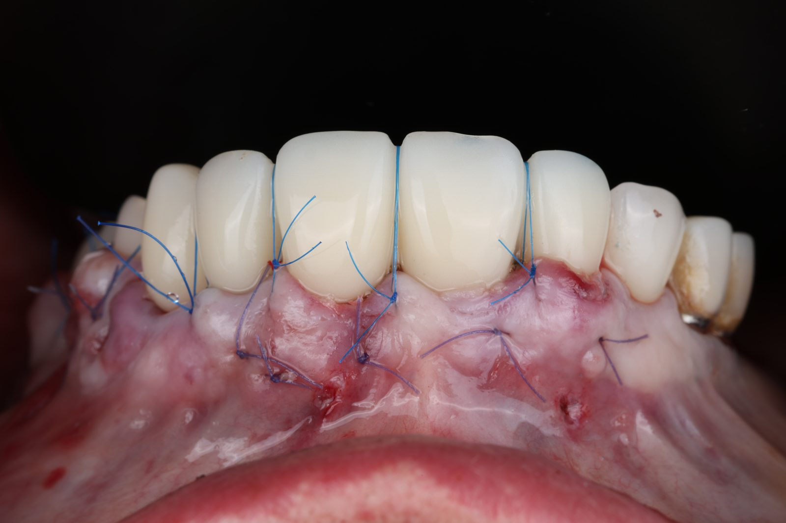
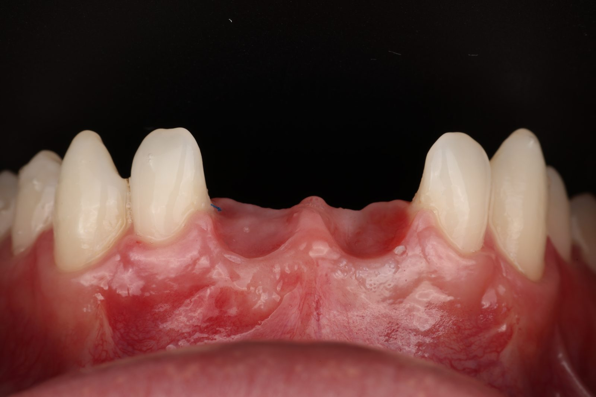
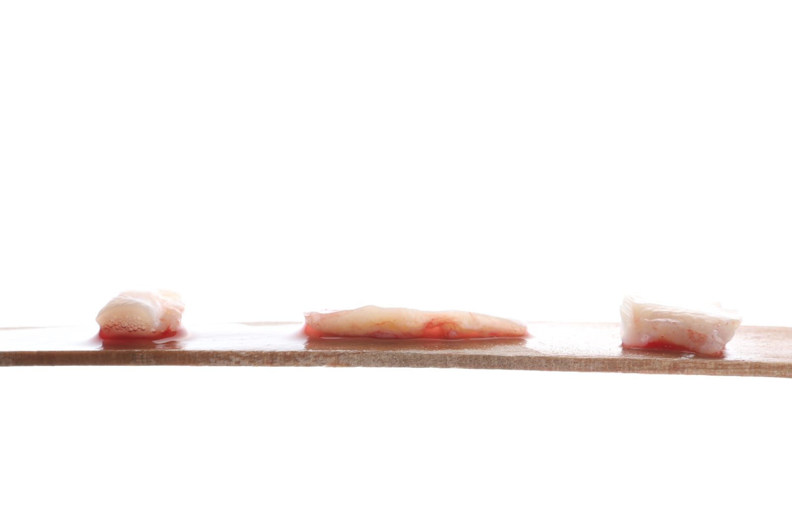
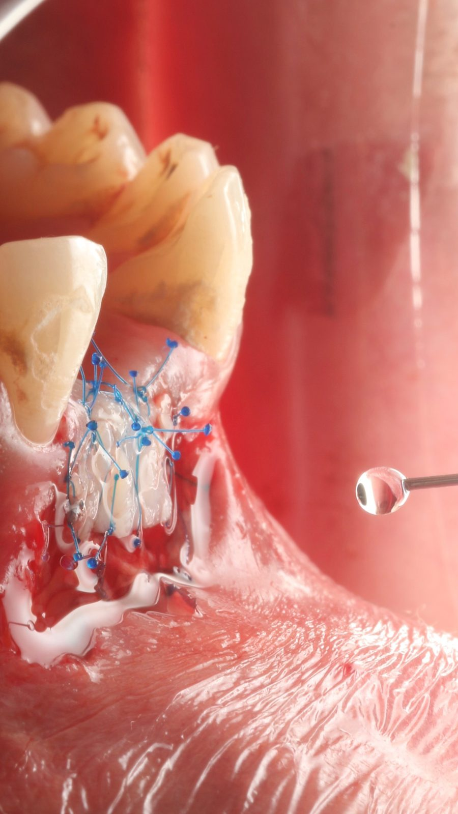
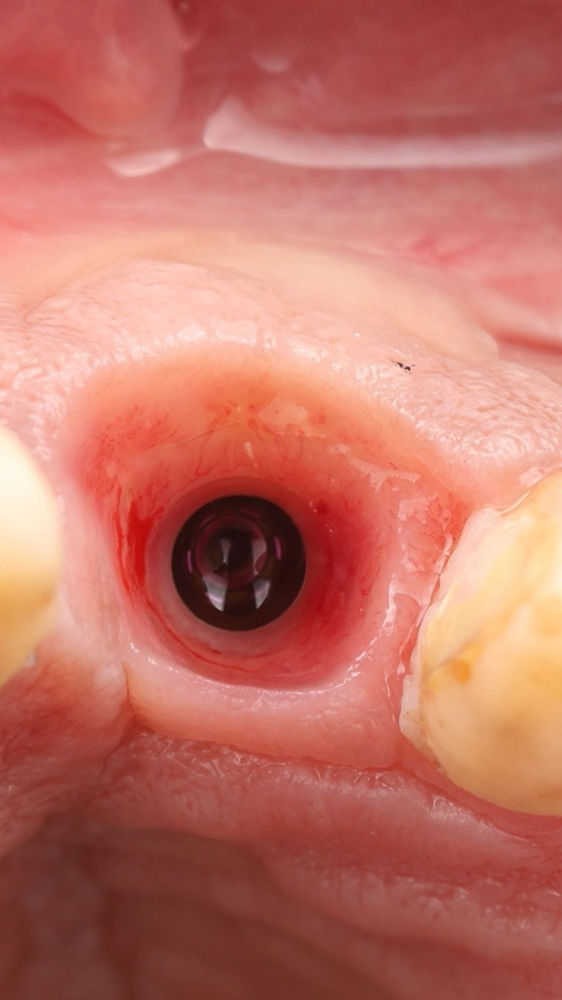
The academy also brings in speakers from outside. Two are booked for the rest of 2026.
The residence runs in the practice, not in a lecture room. This is where the four days happen.
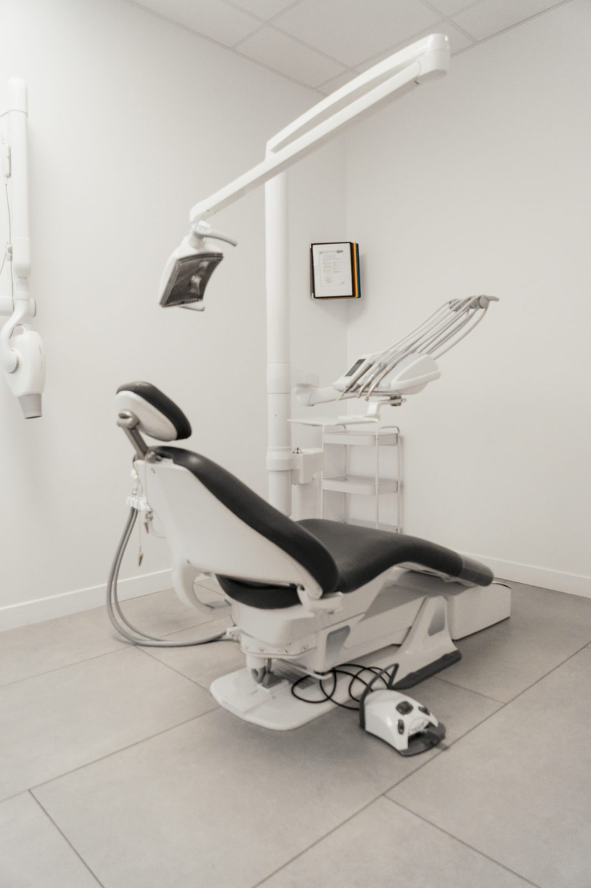
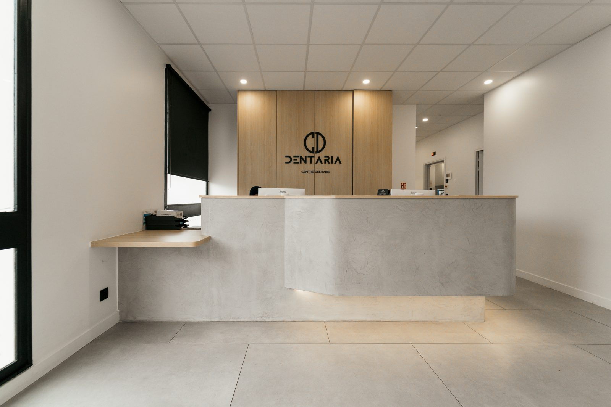